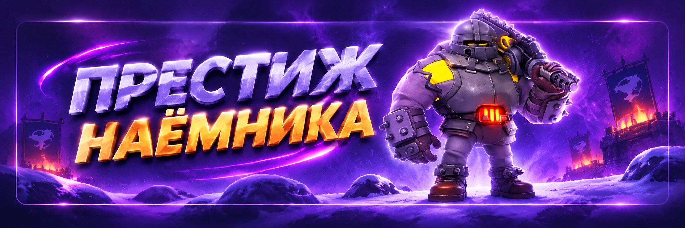

Престиж наёмника
Автор: SOVA58
PvE-событие с личной цепочкой наёмников Фаэтона и общей альянсовой частью. Сейчас нужно пройти 25 этапов.
⚡ Главный ресурс события: выносливость.
🎯 Сначала пробуем пройти цель самостоятельно.
🤝 Помощь и рейды оставляем на сложные этапы.
👹 После личной цепочки открываются капитаны Фаэтона.
🎯 Как проходить
Каждый этап: находим наёмника, пробуем победить самостоятельно и переходим дальше.
Если обычной атаки уже не хватает, используем помощь альянса или рейд.
⚡ Выносливость
Не обязательно закрывать всё событие в первый день.
- используем естественное восстановление;
- забираем ежедневную выносливость;
- банки оставляем на конец;
- не тратим 25 выносливости на рейд, если цель проходится обычной атакой.
🦸 Джина
Джина полезна здесь благодаря снижению расхода выносливости на подходящие действия в тундре.
Пока цель проходится соло, выгоднее использовать Джину и обычную атаку, чем лишний рейд.
🤝 Помощь альянса
Помощь лучше сохранять на этапы, где самостоятельно уже тяжело.
Игроки часто договариваются помогать друг другу по очереди, чтобы оба получили дополнительную пользу от механики помощи.
🔥 Когда нужен рейд
Предупреждение о высокой силе цели не всегда означает гарантированное поражение.
Смотрите предыдущий боевой отчёт. Если прошлый этап прошли с большим запасом, следующий тоже стоит сначала проверить соло.
👹 Альянсовые боссы
После достаточного прогресса участников открываются капитаны Фаэтона.
Не спешим сразу наносить максимальный урон. Сначала даём всем желающим отметиться небольшим маршем, после команды R4/R5 начинаем добивать босса.
💬 Опыт игроков
- Не закрывайте всё за несколько часов. Игроки часто растягивают событие на 2–3 дня и экономят банки выносливости.
- На время события сокращают обычные рейды на Полярный ужас. Выносливость выгоднее оставить на личную цепочку.
- Банки выносливости используют в конце. Сначала тратят естественное восстановление и бесплатные источники.
- Не верят предупреждению о силе вслепую. Если прошлый бой прошёл уверенно, следующий этап сначала пробуют соло.
- Помощью обмениваются. Один игрок помогает другому, потом получают помощь в ответ.
- На капитане сначала отправляют минимальный марш. Цель первого удара: зафиксировать участие как можно большего числа игроков.
- Добивают только после команды. Иначе сильный игрок может снести босса раньше, чем остальные успеют получить участие.
🚫 Частые ошибки
- закрывать всё в первый день;
- тратить банки сразу;
- открывать рейд на лёгкой цели;
- расходовать помощь на простые этапы;
- не смотреть боевые отчёты;
- сразу отправлять сильный марш на капитана;
- добивать босса до команды R4/R5.
✅ Быстрая схема
⚡ копим выносливость → 🔍 находим цель → ⚔️ пробуем соло → 🤝 сложный этап закрываем помощью → 🔥 при необходимости рейдом → ✅ доходим до 25-го → 👹 капитан → 🪖 сначала маленький марш → 📢 команда → 💥 добиваем
🏆 Главное
Не сжигаем выносливость там, где можно пройти дешевле.
А на капитанах сначала даём игрокам отметиться, и только потом начинаем полноценную атаку.